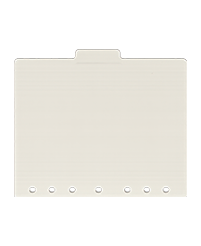

← Back to GuideCase Study
Design Decisions
For my figma design, I made the design very scrapbook *ish* and I really didn't want to make a design that was boxy and boring. The tagline I used totally suits my idea. "I wanted to make a field guide... and then my personality got invited."
When I sat down to start coding, I didn't really know how to do what I wanted. After doing the tutorials, it got a bit clearer. I could see the design in my head, and after getting one section done, I felt great...it looked how I expected, and wanted. Once I moved onto the next section...the problems started.
Technical Challenges
Once I started section 2, I realized that some of the ways I coded section 1 made it near impossible to add anything without having a massive space in between sections. Obviously I needed to figure out how to fix it, but it was kind of late, and I had to work the next day. So, I asked the robot to help be find it.
When I asked the robot for help, it said, "oh its this value, this position" so with it being late, I said "cool, fix it" (I'm sure that I prompted something else, more specific, but I don't remember exactly what.) Once the robot 'fixed' it, everything was changed, and some disappeared altogether. Naturally I asked robot to undo what it did, and restore what was there... and that's when the shit show started.
When the robot restored the info, 95% of it was gone. Not wrong, not moved, just gone. After that, I went to chatgpt and hoped. Chat walked me through getting most of it back. The only thing I couldn't get back, where my images.
Responsive Strategy
I wanted some things to be responsive and others to be just decorative. I also wanted the interaction to be specific, and work on elements that I included...like images.
Learning Moments
The most important think I learned was to save my work. There were other lessons for sure, but most important was to commit and save. I also learned (reiterated the lesson) that I can and should ask for help before I completely lose my shit trying to figure it out.
Future Improvements
I want to add my profile, when I figure out how to make one. And I want to always keep the same vibe. (coordinated chaos). I want to try and remember enough to not have to look up everything.